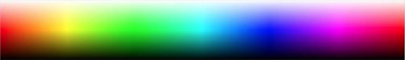
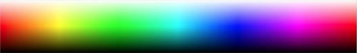

Podaj składową H koloru w kodzie HSL
0 do 30 czerwienie, do 6 żółcie, do 150 zielenie, do 250 niebieskie, do 360 fiolet i purpura
| Kolor główny | |||
| kolor 2 | kolor 3 | kolor 4 | kolor 5 |
0 do 30 czerwienie, do 6 żółcie, do 150 zielenie, do 250 niebieskie, do 360 fiolet i purpura
| Kolor główny | |||
| kolor 2 | kolor 3 | kolor 4 | kolor 5 |